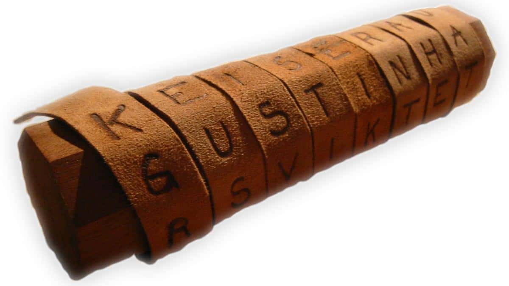
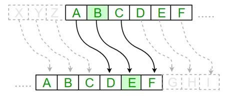

Istoria criptografiei începe cu nevoia oamenilor de a ascunde sensul mesajelor într-un mod care să fie accesibil doar celor inițiați. În primele civilizații, comunicarea secretă era un instrument militar și politic esențial, folosit pentru a proteja informații strategice. Deși la început tehnicile erau rudimentare, principiile care stau la baza criptografiei moderne – confidențialitatea și controlul accesului la informație – erau deja prezente.
Primele metode de criptare cunoscute sunt cifrurile de transpoziție, în care ordinea literelor dintr-un mesaj este modificată conform unei reguli prestabilite. Spre deosebire de cifrurile de substituție, unde fiecare literă este înlocuită cu o alta, transpoziția nu schimbă simbolurile, ci doar le rearanjează. Această metodă se baza mai degrabă pe confuzie decât pe substituție, și deși simplă, a fost eficientă timp de secole datorită lipsei unor metode automate de analiză.
Un exemplu istoric notabil este scitalul spartan, utilizat în Grecia antică, în secolul al V-lea î.Hr. Acesta consta într-un baston de lemn în jurul căruia era înfășurată o bandă subțire de pergament sau piele. Mesajul era scris de-a lungul bastonului, iar atunci când banda era desfășurată, literele păreau amestecate și ilizibile. Doar cine deținea un baston de aceeași grosime putea reconstitui textul original. Acest dispozitiv este considerat una dintre primele aplicații practice ale unui cifru de transpoziție.
De-a lungul timpului, s-au dezvoltat diverse forme de transpoziție:
- Transpoziția simplă, în care ordinea literelor este inversată sau schimbată după o regulă fixă (de exemplu, scrierea pe rânduri și citirea pe coloane).
- Transpoziția cu cheie, unde rearanjarea depinde de o cheie numerică sau de un cuvânt-cheie, care determină ordinea în care coloanele sunt citite.
După perioada primelor metode de transpoziție, criptografia a evoluat către forme mai complexe, bazate pe substituția literelor. Aceste cifruri nu se mai limitau la rearanjarea caracterelor, ci presupuneau înlocuirea fiecărei litere cu o alta, conform unei reguli sau chei. Acest principiu a dominat criptografia timp de peste două milenii și a stat la baza celor mai cunoscute sisteme clasice:
- Cifrul lui Caesar
- Cifrul lui Vigenère
- Cifrul Hill
Cifrul lui Caesar
Unul dintre cele mai vechi și celebre cifruri de substituție este Cifrul lui Caesar, atribuit împăratului roman Gaius Iulius Caesar, care îl folosea pentru a transmite mesaje codificate generalilor săi. Principiul său este simplu: fiecare literă din textul original este înlocuită cu o altă literă aflată la o distanță fixă în alfabet. De exemplu, o deplasare cu trei poziții transformă „A” în „D”, „B” în „E” ș.a.m.d
Matematic, această metodă poate fi exprimată prin formula:
C = (P + k) mod 26,
unde C este litera criptată, P este valoarea numerică a literei originale, iar k este cheia (numărul de poziții deplasate).
Cifrul lui Vigenère
În secolul al XVI-lea, criptografia europeană cunoaște o dezvoltare semnificativă odată cu apariția Cifrului lui Vigenère, considerat mult timp „indescifrabil”. Acest cifru introduce ideea de cheie polialfabetică, adică folosirea mai multor alfabete de substituție succesive pentru a spori complexitatea criptării.
Cheia, formată dintr-un cuvânt sau o expresie, determină deplasările fiecărei litere din mesaj. De exemplu, dacă cheia este „CHEIE”, atunci prima literă este deplasată conform valorii „C” (2), a doua după „H” (7) și așa mai departe. După ce cheia se termină, se reia ciclul.
Vigenère a fost un pas uriaș înainte, deoarece a eliminat vulnerabilitățile analizelor de frecvență. Această metodă a fost folosită intens până în secolul al XIX-lea, când, în 1863, Friedrich Kasiski a descoperit o tehnică de analiză bazată pe repetițiile din textul cifrat, permițând astfel spargerea sistemului. Totuși, importanța cifrului Vigenère rămâne incontestabilă: el a inaugurat conceptul de cheie complexă, prefigurând ideea de cheie secretă variabilă, folosită și astăzi în criptografia simetrică.
Perioada de tranziție dintre criptografia clasică și cea mecanică marchează o etapă esențială în dezvoltarea instrumentelor destinate codificării mesajelor. Înaintea apariției calculatoarelor și a dispozitivelor electromecanice, criptografii au conceput o serie de instrumente fizice și tabele sistematice pentru a simplifica procesul de criptare și decriptare. Printre cele mai reprezentative invenții ale acestei perioade se numără tabula recta și discul lui Jefferson, ambele constituind pași importanți spre automatizarea procesului criptografic.